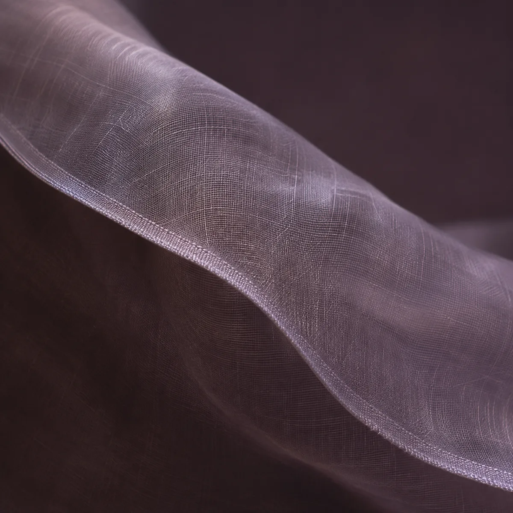
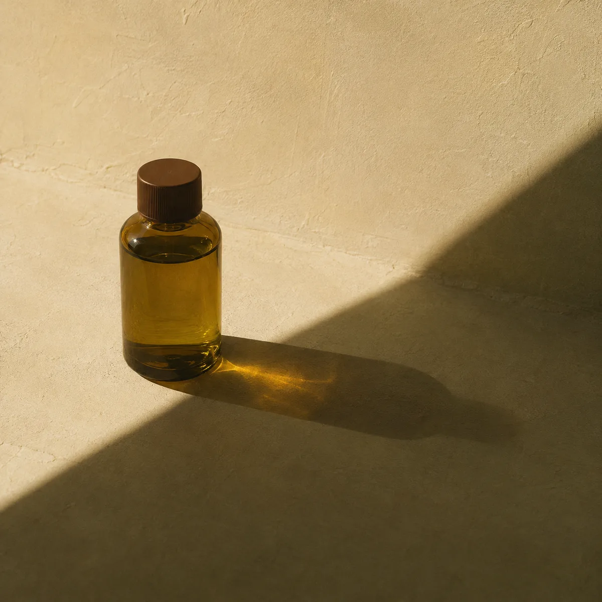

Playground
Six visual studies, revisited. Open the responsive edition or inspect the original flat artwork.







Nebula Systems
Inspect three interface signals, including a two-pulse visual trace.
Original flat (PNG)
Standalone editions
Earlier interactive studies
Bauhaus Design · Aether Essence · Digital Poetics · Solstice Studio · Village Auto · Nebula Systems